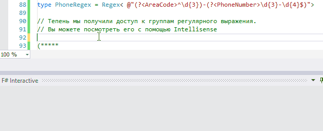

namespace Microsoft
namespace Microsoft.FSharp
namespace Microsoft.FSharp.Quotations
Multiple items
namespace FSharp
--------------------
namespace Microsoft.FSharp
namespace System
val favoriteSites : Uri list
Full name: Review-fsharp-4.favoriteSites
Multiple items
module List
from Microsoft.FSharp.Collections
--------------------
type List<'T> =
| ( [] )
| ( :: ) of Head: 'T * Tail: 'T list
interface IEnumerable
interface IEnumerable<'T>
member GetSlice : startIndex:int option * endIndex:int option -> 'T list
member Head : 'T
member IsEmpty : bool
member Item : index:int -> 'T with get
member Length : int
member Tail : 'T list
static member Cons : head:'T * tail:'T list -> 'T list
static member Empty : 'T list
Full name: Microsoft.FSharp.Collections.List<_>
val map : mapping:('T -> 'U) -> list:'T list -> 'U list
Full name: Microsoft.FSharp.Collections.List.map
val sprintf : format:Printf.StringFormat<'T> -> 'T
Full name: Microsoft.FSharp.Core.ExtraTopLevelOperators.sprintf
val s : string
Multiple items
type Uri =
new : uriString:string -> Uri + 5 overloads
member AbsolutePath : string
member AbsoluteUri : string
member Authority : string
member DnsSafeHost : string
member Equals : comparand:obj -> bool
member Fragment : string
member GetComponents : components:UriComponents * format:UriFormat -> string
member GetHashCode : unit -> int
member GetLeftPart : part:UriPartial -> string
...
Full name: System.Uri
--------------------
Uri(uriString: string) : unit
Uri(uriString: string, uriKind: UriKind) : unit
Uri(baseUri: Uri, relativeUri: string) : unit
Uri(baseUri: Uri, relativeUri: Uri) : unit
val ch : char
val n : int
Multiple items
type String =
new : value:char -> string + 7 overloads
member Chars : int -> char
member Clone : unit -> obj
member CompareTo : value:obj -> int + 1 overload
member Contains : value:string -> bool
member CopyTo : sourceIndex:int * destination:char[] * destinationIndex:int * count:int -> unit
member EndsWith : value:string -> bool + 2 overloads
member Equals : obj:obj -> bool + 2 overloads
member GetEnumerator : unit -> CharEnumerator
member GetHashCode : unit -> int
...
Full name: System.String
--------------------
String(value: nativeptr<char>) : unit
String(value: nativeptr<sbyte>) : unit
String(value: char []) : unit
String(c: char, count: int) : unit
String(value: nativeptr<char>, startIndex: int, length: int) : unit
String(value: nativeptr<sbyte>, startIndex: int, length: int) : unit
String(value: char [], startIndex: int, length: int) : unit
String(value: nativeptr<sbyte>, startIndex: int, length: int, enc: Text.Encoding) : unit
val favoriteSites' : Uri list
Full name: Review-fsharp-4.favoriteSites'
val sumSquares : n:int -> int
Full name: Review-fsharp-4.sumSquares
val total : int ref
Multiple items
val ref : value:'T -> 'T ref
Full name: Microsoft.FSharp.Core.Operators.ref
--------------------
type 'T ref = Ref<'T>
Full name: Microsoft.FSharp.Core.ref<_>
module Seq
from Microsoft.FSharp.Collections
val iter : action:('T -> unit) -> source:seq<'T> -> unit
Full name: Microsoft.FSharp.Collections.Seq.iter
val i : int
val sumSquares' : n:int -> int
Full name: Review-fsharp-4.sumSquares'
val mutable total : int
namespace FSharp.Text
namespace FSharp.Text.RegexProvider
type PhoneRegex = Regex<...>
Full name: Review-fsharp-4.PhoneRegex
type Regex =
inherit Regex
member Options : RegexOptions
member RightToLeft : bool
val capnames : Hashtable
val caps : Hashtable
val capsize : int
val capslist : string []
val factory : RegexRunnerFactory
val pattern : string
val roptions : RegexOptions
...
Full name: FSharp.Text.RegexProvider.Regex
module Patterns
from Microsoft.FSharp.Quotations
type TestQuotation =
static member EchoExpression : x:Expr<'a> -> unit
Full name: Review-fsharp-4.TestQuotation
static member TestQuotation.EchoExpression : x:Expr<'a> -> unit
Full name: Review-fsharp-4.TestQuotation.EchoExpression
Multiple items
type ReflectedDefinitionAttribute =
inherit Attribute
new : unit -> ReflectedDefinitionAttribute
new : includeValue:bool -> ReflectedDefinitionAttribute
member IncludeValue : bool
Full name: Microsoft.FSharp.Core.ReflectedDefinitionAttribute
--------------------
new : unit -> ReflectedDefinitionAttribute
new : includeValue:bool -> ReflectedDefinitionAttribute
val x : Expr<'a>
Multiple items
type Expr =
override Equals : obj:obj -> bool
member GetFreeVars : unit -> seq<Var>
member Substitute : substitution:(Var -> Expr option) -> Expr
member ToString : full:bool -> string
member CustomAttributes : Expr list
member Type : Type
static member AddressOf : target:Expr -> Expr
static member AddressSet : target:Expr * value:Expr -> Expr
static member Application : functionExpr:Expr * argument:Expr -> Expr
static member Applications : functionExpr:Expr * arguments:Expr list list -> Expr
...
Full name: Microsoft.FSharp.Quotations.Expr
--------------------
type Expr<'T> =
inherit Expr
member Raw : Expr
Full name: Microsoft.FSharp.Quotations.Expr<_>
val toCode : (Expr -> string)
active recognizer PropertyGet: Expr -> (Expr option * Reflection.PropertyInfo * Expr list) option
Full name: Microsoft.FSharp.Quotations.Patterns.( |PropertyGet|_| )
val v : Reflection.PropertyInfo
property Reflection.MemberInfo.Name: string
active recognizer Call: Expr -> (Expr option * Reflection.MethodInfo * Expr list) option
Full name: Microsoft.FSharp.Quotations.Patterns.( |Call|_| )
val mthd : Reflection.MethodInfo
val args : Expr list
val argStr : string
val concat : sep:string -> strings:seq<string> -> string
Full name: Microsoft.FSharp.Core.String.concat
property Reflection.MemberInfo.DeclaringType: Type
active recognizer WithValue: Expr -> (obj * Type * Expr) option
Full name: Microsoft.FSharp.Quotations.Patterns.( |WithValue|_| )
val value : obj
val expr : Expr
val printfn : format:Printf.TextWriterFormat<'T> -> 'T
Full name: Microsoft.FSharp.Core.ExtraTopLevelOperators.printfn
val x : int
Full name: Review-fsharp-4.x
val y : int
Full name: Review-fsharp-4.y
static member TestQuotation.EchoExpression : x:Expr<'a> -> unit
type Math =
static val PI : float
static val E : float
static member Abs : value:sbyte -> sbyte + 6 overloads
static member Acos : d:float -> float
static member Asin : d:float -> float
static member Atan : d:float -> float
static member Atan2 : y:float * x:float -> float
static member BigMul : a:int * b:int -> int64
static member Ceiling : d:decimal -> decimal + 1 overload
static member Cos : d:float -> float
...
Full name: System.Math
Math.Max(val1: decimal, val2: decimal) : decimal
(+0 other overloads)
Math.Max(val1: float, val2: float) : float
(+0 other overloads)
Math.Max(val1: float32, val2: float32) : float32
(+0 other overloads)
Math.Max(val1: uint64, val2: uint64) : uint64
(+0 other overloads)
Math.Max(val1: int64, val2: int64) : int64
(+0 other overloads)
Math.Max(val1: uint32, val2: uint32) : uint32
(+0 other overloads)
Math.Max(val1: int, val2: int) : int
(+0 other overloads)
Math.Max(val1: uint16, val2: uint16) : uint16
(+0 other overloads)
Math.Max(val1: int16, val2: int16) : int16
(+0 other overloads)
Math.Max(val1: byte, val2: byte) : byte
(+0 other overloads)
namespace Microsoft.FSharp.Data
namespace Microsoft.FSharp.Data.UnitSystems
namespace Microsoft.FSharp.Data.UnitSystems.SI
namespace Microsoft.FSharp.Data.UnitSystems.SI.UnitSymbols
Multiple items
type MeasureAttribute =
inherit Attribute
new : unit -> MeasureAttribute
Full name: Microsoft.FSharp.Core.MeasureAttribute
--------------------
new : unit -> MeasureAttribute
[<Measure>]
type cm
Full name: Review-fsharp-4.cm
[<Measure>]
type Jones = Hz ^ (1/2) cm/W
Full name: Review-fsharp-4.Jones
[<Measure>]
type Hz = Data.UnitSystems.SI.UnitNames.hertz
Full name: Microsoft.FSharp.Data.UnitSystems.SI.UnitSymbols.Hz
[<Measure>]
type W = Data.UnitSystems.SI.UnitNames.watt
Full name: Microsoft.FSharp.Data.UnitSystems.SI.UnitSymbols.W
val testRational : float<Jones>
Full name: Review-fsharp-4.testRational
val sqrt : value:'T -> 'U (requires member Sqrt)
Full name: Microsoft.FSharp.Core.Operators.sqrt
[<Measure>]
type ft
Full name: Review-fsharp-4.ft
val howManyFoot : m:float<m> -> unit
Full name: Review-fsharp-4.howManyFoot
val m : float<m>
Multiple items
val float : value:'T -> float (requires member op_Explicit)
Full name: Microsoft.FSharp.Core.Operators.float
--------------------
type float = Double
Full name: Microsoft.FSharp.Core.float
--------------------
type float<'Measure> = float
Full name: Microsoft.FSharp.Core.float<_>
[<Measure>]
type m = Data.UnitSystems.SI.UnitNames.metre
Full name: Microsoft.FSharp.Data.UnitSystems.SI.UnitSymbols.m
val howManyFoot' : m:float<m> -> unit
Full name: Review-fsharp-4.howManyFoot'
namespace System.Collections
namespace System.Collections.Generic
Multiple items
type Dictionary<'TKey,'TValue> =
new : unit -> Dictionary<'TKey, 'TValue> + 5 overloads
member Add : key:'TKey * value:'TValue -> unit
member Clear : unit -> unit
member Comparer : IEqualityComparer<'TKey>
member ContainsKey : key:'TKey -> bool
member ContainsValue : value:'TValue -> bool
member Count : int
member GetEnumerator : unit -> Enumerator<'TKey, 'TValue>
member GetObjectData : info:SerializationInfo * context:StreamingContext -> unit
member Item : 'TKey -> 'TValue with get, set
...
nested type Enumerator
nested type KeyCollection
nested type ValueCollection
Full name: System.Collections.Generic.Dictionary<_,_>
--------------------
Dictionary() : unit
Dictionary(capacity: int) : unit
Dictionary(comparer: IEqualityComparer<'TKey>) : unit
Dictionary(dictionary: IDictionary<'TKey,'TValue>) : unit
Dictionary(capacity: int, comparer: IEqualityComparer<'TKey>) : unit
Dictionary(dictionary: IDictionary<'TKey,'TValue>, comparer: IEqualityComparer<'TKey>) : unit
val this : Dictionary<'TKey,'TValue>
member Dictionary.Items : seq<'TKey * 'TValue> with set
Full name: Review-fsharp-4.Items
val set : elements:seq<'T> -> Set<'T> (requires comparison)
Full name: Microsoft.FSharp.Core.ExtraTopLevelOperators.set
val items : seq<'TKey * 'TValue>
Dictionary.Clear() : unit
val key : 'TKey
val value : 'TValue
Dictionary.Add(key: 'TKey, value: 'TValue) : unit
val testDictionary : Dictionary<int,string>
Full name: Review-fsharp-4.testDictionary
type A =
interface IComparable<int>
new : i:int -> A
Full name: Review-fsharp-4.A
Multiple items
val int : value:'T -> int (requires member op_Explicit)
Full name: Microsoft.FSharp.Core.Operators.int
--------------------
type int = int32
Full name: Microsoft.FSharp.Core.int
--------------------
type int<'Measure> = int
Full name: Microsoft.FSharp.Core.int<_>
Multiple items
type IComparable =
member CompareTo : obj:obj -> int
Full name: System.IComparable
--------------------
type IComparable<'T> =
member CompareTo : other:'T -> int
Full name: System.IComparable<_>
val this : A
override A.CompareTo : other:int -> int
Full name: Review-fsharp-4.A.CompareTo
val other : int
Int32.CompareTo(value: int) : int
Int32.CompareTo(value: obj) : int
type B =
inherit A
interface IComparable<string>
new : i:int -> B
Full name: Review-fsharp-4.B
Тип реализует оба интерфейса IComparable<int> и IComparable<string>
Multiple items
new : i:int -> A
--------------------
type A =
interface IComparable<int>
new : i:int -> A
Full name: Review-fsharp-4.A
Multiple items
val string : value:'T -> string
Full name: Microsoft.FSharp.Core.Operators.string
--------------------
type string = String
Full name: Microsoft.FSharp.Core.string
val this : B
override B.CompareTo : other:string -> int
Full name: Review-fsharp-4.B.CompareTo
val other : string
Multiple items
type StructuredFormatDisplayAttribute =
inherit Attribute
new : value:string -> StructuredFormatDisplayAttribute
member Value : string
Full name: Microsoft.FSharp.Core.StructuredFormatDisplayAttribute
--------------------
new : value:string -> StructuredFormatDisplayAttribute
type Feature =
{Name: string;
Version: float;}
Full name: Review-fsharp-4.Feature
Feature.Name: string
Multiple items
Feature.Version: float
--------------------
type Version =
new : unit -> Version + 4 overloads
member Build : int
member Clone : unit -> obj
member CompareTo : version:obj -> int + 1 overload
member Equals : obj:obj -> bool + 1 overload
member GetHashCode : unit -> int
member Major : int
member MajorRevision : int16
member Minor : int
member MinorRevision : int16
...
Full name: System.Version
--------------------
Version() : unit
Version(version: string) : unit
Version(major: int, minor: int) : unit
Version(major: int, minor: int, build: int) : unit
Version(major: int, minor: int, build: int, revision: int) : unit
val feature : Feature
Full name: Review-fsharp-4.feature
Multiple items
type Version =
new : unit -> Version + 4 overloads
member Build : int
member Clone : unit -> obj
member CompareTo : version:obj -> int + 1 overload
member Equals : obj:obj -> bool + 1 overload
member GetHashCode : unit -> int
member Major : int
member MajorRevision : int16
member Minor : int
member MinorRevision : int16
...
Full name: System.Version
--------------------
Version() : unit
Version(version: string) : unit
Version(major: int, minor: int) : unit
Version(major: int, minor: int, build: int) : unit
Version(major: int, minor: int, build: int, revision: int) : unit
Multiple items
type List<'T> =
new : unit -> List<'T> + 2 overloads
member Add : item:'T -> unit
member AddRange : collection:IEnumerable<'T> -> unit
member AsReadOnly : unit -> ReadOnlyCollection<'T>
member BinarySearch : item:'T -> int + 2 overloads
member Capacity : int with get, set
member Clear : unit -> unit
member Contains : item:'T -> bool
member ConvertAll<'TOutput> : converter:Converter<'T, 'TOutput> -> List<'TOutput>
member CopyTo : array:'T[] -> unit + 2 overloads
...
nested type Enumerator
Full name: System.Collections.Generic.List<_>
--------------------
List() : unit
List(capacity: int) : unit
List(collection: IEnumerable<'T>) : unit
String.ToUpper() : string
String.ToUpper(culture: Globalization.CultureInfo) : string
val distinct : source:seq<'T> -> seq<'T> (requires equality)
Full name: Microsoft.FSharp.Collections.Seq.distinct
val toList : source:seq<'T> -> 'T list
Full name: Microsoft.FSharp.Collections.Seq.toList
val iter : action:('T -> unit) -> list:'T list -> unit
Full name: Microsoft.FSharp.Collections.List.iter
val distinct : list:'T list -> 'T list (requires equality)
Full name: Microsoft.FSharp.Collections.List.distinct
val run : unit -> unit
Full name: Review-fsharp-4.Tortoise.run
val today : DateTime
Multiple items
type DateTime =
struct
new : ticks:int64 -> DateTime + 10 overloads
member Add : value:TimeSpan -> DateTime
member AddDays : value:float -> DateTime
member AddHours : value:float -> DateTime
member AddMilliseconds : value:float -> DateTime
member AddMinutes : value:float -> DateTime
member AddMonths : months:int -> DateTime
member AddSeconds : value:float -> DateTime
member AddTicks : value:int64 -> DateTime
member AddYears : value:int -> DateTime
...
end
Full name: System.DateTime
--------------------
DateTime()
(+0 other overloads)
DateTime(ticks: int64) : unit
(+0 other overloads)
DateTime(ticks: int64, kind: DateTimeKind) : unit
(+0 other overloads)
DateTime(year: int, month: int, day: int) : unit
(+0 other overloads)
DateTime(year: int, month: int, day: int, calendar: Globalization.Calendar) : unit
(+0 other overloads)
DateTime(year: int, month: int, day: int, hour: int, minute: int, second: int) : unit
(+0 other overloads)
DateTime(year: int, month: int, day: int, hour: int, minute: int, second: int, kind: DateTimeKind) : unit
(+0 other overloads)
DateTime(year: int, month: int, day: int, hour: int, minute: int, second: int, calendar: Globalization.Calendar) : unit
(+0 other overloads)
DateTime(year: int, month: int, day: int, hour: int, minute: int, second: int, millisecond: int) : unit
(+0 other overloads)
DateTime(year: int, month: int, day: int, hour: int, minute: int, second: int, millisecond: int, kind: DateTimeKind) : unit
(+0 other overloads)
property DateTime.Now: DateTime
val tomorrow : DateTime
DateTime.AddDays(value: float) : DateTime
val mutable result : bool
val i : int32
module NonStructuralComparison
from Microsoft.FSharp.Core.Operators
val run : unit -> unit
Full name: Review-fsharp-4.Hare.run
module Tortoise
from Review-fsharp-4
module Hare
from Review-fsharp-4
type unit = Unit
Full name: Microsoft.FSharp.Core.unit
val alphabet : char list
Full name: Review-fsharp-4.alphabet
module Option
from Microsoft.FSharp.Core
val toNullable : option:'T option -> System.Nullable<'T> (requires default constructor and value type and 'T :> System.ValueType)
Full name: Microsoft.FSharp.Core.Option.toNullable
type 'T option = Option<'T>
Full name: Microsoft.FSharp.Core.option<_>
val ofNullable : value:System.Nullable<'T> -> 'T option (requires default constructor and value type and 'T :> System.ValueType)
Full name: Microsoft.FSharp.Core.Option.ofNullable
val ofObj : value:'T -> 'T option (requires 'T : null)
Full name: Microsoft.FSharp.Core.Option.ofObj
val toObj : value:'T option -> 'T (requires 'T : null)
Full name: Microsoft.FSharp.Core.Option.toObj
module Operators
from Microsoft.FSharp.Core
val tryUnbox : value:obj -> 'T option
Full name: Microsoft.FSharp.Core.Operators.tryUnbox
type obj = System.Object
Full name: Microsoft.FSharp.Core.obj
val isNull : value:'T -> bool (requires 'T : null)
Full name: Microsoft.FSharp.Core.Operators.isNull
type bool = System.Boolean
Full name: Microsoft.FSharp.Core.bool
val nullEnvValue : string
Full name: Review-fsharp-4.nullEnvValue
type Environment =
static member CommandLine : string
static member CurrentDirectory : string with get, set
static member Exit : exitCode:int -> unit
static member ExitCode : int with get, set
static member ExpandEnvironmentVariables : name:string -> string
static member FailFast : message:string -> unit + 1 overload
static member GetCommandLineArgs : unit -> string[]
static member GetEnvironmentVariable : variable:string -> string + 1 overload
static member GetEnvironmentVariables : unit -> IDictionary + 1 overload
static member GetFolderPath : folder:SpecialFolder -> string + 1 overload
...
nested type SpecialFolder
nested type SpecialFolderOption
Full name: System.Environment
Environment.GetEnvironmentVariable(variable: string) : string
Environment.GetEnvironmentVariable(variable: string, target: EnvironmentVariableTarget) : string
val optionEnvValue : string option
Full name: Review-fsharp-4.optionEnvValue
План презентации
- Введение — история разработки четвертой версии
- Язык — улучшения языка F# и среды исполнения
- Библиотека FSharp.Core — улучшения основой библиотеки языка F#
- Интегрированная среда разработки — новые функции Visual Studio 2015 и плагина "Visual F# Power Tools"
- Ссылки и материалы — ссылки на использованые в презентации материалы и полезные сайты для старта изучения F#
Не обязательное корневое пространство имен Microsoft
- При использовании или открытии модулей и пространств имен из
FSharp.Core корневое пространство имен Microsoft теперь является необязательным.
F# 3.1
1:
|
open Microsoft.FSharp.Quotations
|
F# 4.0
1:
|
open FSharp.Quotations
|
Конструкторы в качестве функций первого класса
- Имена классов теперь можно использовать как значения функции первого класса, представляющие конструкторы для этого класса.
F# 3.1
1:
2:
3:
4:
5:
6:
7:
|
let favoriteSites =
[ "tryfsharp.org"; "fsharpforfunandprofit.com"; "fsharp.org" ]
|> List.map (sprintf "http://%s")
|> List.map (fun s -> Uri(s))
[ ('a', 1); ('b', 2); ('c', 3) ]
|> List.map ( fun (ch,n) -> String(ch,n) )
|
F# 4.0
1:
2:
3:
4:
5:
6:
7:
|
let favoriteSites' =
[ "tryfsharp.org"; "fsharpforfunandprofit.com"; "fsharp.org" ]
|> List.map (sprintf "http://%s")
|> List.map Uri
[ ('a', 1); ('b', 2); ('c', 3) ]
|> List.map String
|
Унификация mutable и ref
- Синтаксис
mutable теперь можно использовать везде, а записанные значения при необходимости автоматически преобразуются компилятором в значения на основе кучи ref.
- Добавлено новое необязательное предупреждение, которое позволит разработчику получать уведомления о таком преобразовании.
F# 3.1
1:
2:
3:
4:
5:
|
let sumSquares n =
let total = ref 0
{1..n}
|> Seq.iter (fun i -> total := !total + i*i)
!total
|
F# 4.0
1:
2:
3:
4:
5:
|
let sumSquares' n =
let mutable total = 0
{1..n}
|> Seq.iter (fun i -> total <- total + i*i)
total
|
Статические параметры для методов поставщиков типов
- Отдельные методы, предоставленные поставщиками типов, теперь могут указывать статические параметры.
F# 4.0
1:
2:
3:
4:
|
#r "FSharp.Text.RegexProvider.dll"
open FSharp.Text.RegexProvider
type PhoneRegex = Regex< @"(?<AreaCode>^\d{3})-(?<PhoneNumber>\d{3}-\d{4}$)">
PhoneRegex().Match("904-601-9540").PhoneNumber.Value
|
Тепень мы получили доступ к группам регулярного выражения. Вы можете посмотреть его с помощью Intellisense

Неявное цитирование аргументов метода
- Аргументы метода типа Expr<'t> теперь могут быть прозрачно автоматически цитированы, передавая значение аргумента и выражения абстрактного синтаксического дерева, которое его создало.
F# 4.0
1:
2:
3:
4:
5:
6:
7:
8:
9:
10:
11:
12:
13:
14:
15:
|
open FSharp.Quotations
open FSharp.Quotations.Patterns
type TestQuotation =
// Метод принимает в качестве аргумента цитату F# кода
static member EchoExpression([<ReflectedDefinition(true)>] x : Expr<_>) =
// Упроценный конвертор цитированного кода
let rec toCode = function
| PropertyGet(_, v, _) -> v.Name
| Call(_, mthd, args) ->
let argStr = args |> List.map toCode |> String.concat ","
sprintf "%s.%s(%s)" mthd.DeclaringType.Name mthd.Name argStr
let (WithValue(value, _, expr)) = x
printfn "Выражение '%s' вычисляет '%O'" (toCode expr) value
|
F# 4.0
- Тестируем результат в интерактивной консоли:
1:
2:
3:
4:
|
let x, y = 42, 93
TestQuotation.EchoExpression(x)
TestQuotation.EchoExpression(y)
TestQuotation.EchoExpression(Math.Max(x,y))
|
Выражение 'x' вычисляет '42'
Выражение 'y' вычисляет '93'
Выражение 'Math.Max(x,y)' вычисляет '93'
|
Расширенная грамматика препроцессора
- Логические операторы ||, && и ! можно использовать с группировкой круглыми скобками в директиве препроцессора #if.
F# 3.1
1:
2:
3:
4:
5:
6:
7:
8:
9:
|
#if TRACE
#else
#if DEBUG
#if PRODUCTION
#else
printfn "x is %d" x
#endif
#endif
#endif
|
F# 4.0
1:
2:
3:
|
#if TRACE || (DEBUG && !PRODUCTION)
printfn "x is %d" x
#endif
|
Рациональная дробь в единицах измерения
- Единицы измерения теперь поддерживают рациональные дроби, которые иногда используются в естественных науках, например, электрике.
F# 4.0
1:
2:
3:
4:
|
open FSharp.Data.UnitSystems.SI.UnitSymbols
[<Measure>] type cm
[<Measure>] type Jones = cm Hz^(1/2) / W
|
F# 4.0
- Тестируем результат в интерактивной консоли:
1:
2:
|
let testRational =
3.0<Jones> + sqrt (9.0<cm^2 Hz / W^2>)
|
1:
|
val testRational : float<Jones> = 6.0
|
Упрощенное использование единиц измерения в функциях в стиле printf
- Числовые значения в единицах измерения теперь без проблем работают с числовыми спецификаторами формата printf, не требуя приведения едениц измерения к числу.
F# 3.1
1:
2:
3:
|
let howManyFoot (m : float<m>) =
printfn "%f футов в %f метрах" ( float (m * 3.28<ft/m>) ) (float m)
|
F# 4.0
1:
2:
|
let howManyFoot' (m : float<m>) =
printfn "%f футов в %f метрах" (m * 3.28<ft/m>) m
|
Свойства расширения в инициализаторах объектов
- Настраиваемые свойства расширения теперь можно задать в выражениях инициализатора объекта.
F# 4.0
1:
2:
3:
4:
5:
6:
7:
8:
|
open System.Collections.Generic
type Dictionary<'TKey, 'TValue> with
member this.Items
with set (items) =
this.Clear()
for key, value in items do this.Add(key, value)
|
F# 4.0
- Инициализируем значение за один шаг.
1:
2:
3:
|
let testDictionary =
Dictionary( capacity = 100,
Items = [(1,"One"); (2,"Two"); (3,"Three")] )
|
Наследование от нескольких экземпляров универсального интерфейса
- Классы, создаваемые на F#, теперь могут наследовать от классов, которые реализуют несколько экземпляров универсального интерфейса.
F# 4.0
1:
2:
3:
4:
5:
6:
7:
8:
9:
|
type A( i : int) =
interface IComparable<int> with
member this.CompareTo(other) = i.CompareTo(other)
/// Тип реализует оба интерфейса IComparable<int> и IComparable<string>
type B( i : int) =
inherit A(i)
interface IComparable<string> with
member this.CompareTo(other) = (string i).CompareTo(other)
|
Несколько свойств в атрибуте StructuredFormatDisplay
- Спецификатор форматирования
%A, настроенный с помощью артибута StructuredFormatDisplay, теперь может включать несколько свойств.
F# 4.0
1:
2:
3:
4:
|
[<StructuredFormatDisplay("{Name}, появился в FSharp версии {Version}")>]
type Feature = {
Name : string
Version : float }
|
F# 4.0
- Тестируем результат в интерактивной консоли:
1:
2:
|
let feature = {Name = "Расширенный атрибут StructuredFormatDisplay"; Version = 4.0}
printfn "%A" feature
|
Расширенный атрибут StructuredFormatDisplay, появился в FSharp версии 4.0
|
Прочие изменения в ядре языка F#
- Поставщики типов, не допускающие значения
null
- Поставщики типов теперь могут быть указаны как не допускающие значения
null с помощью стандартного атрибута AllowNullLiteral(false).
- Поддержка массивов .NET высокой размерности.
- Массивы .NET ранга 5 или выше теперь могут быть использованы кодом F #.
Нормализация API модулей Array, List и Seq
- Набор функций обработки коллекций теперь будет согласованным в модулях Array, List и Seq (за исключением случаев, когда API-интерфейсы неприменимы к определенным типам).
- Реализации функций оптимизированы с учетом особенностей каждого типа: Array, List, Seq.
- См. подробнее: "Regularizing and extending the List, Array and Seq modules"
F# 3.1
1:
2:
3:
4:
5:
|
["a";"b";"b";"c";"c";]
|> List.map (fun s -> s.ToUpper())
|> Seq.distinct
|> Seq.toList
|> List.iter (printfn "Буква: %s")
|
F# 4.0
1:
2:
3:
4:
5:
|
["a";"b";"b";"c";"c";]
|> List.map (fun s -> s.ToUpper())
|> List.distinct
|> List.iter (printfn "Буква: %s")
|
Оптимизированное структурное хэширование
- Была проведена значительная работа по улучшению производительности универсального хэша сравнения для типов-примитивов.
- Это позволило повысить производительность функций модулей Arrray, List, и Seq, таких как "distinct" и "groupBy".
Оптимизированные неструктурные операторы сравнения
- Модуль
NonStructuralComparison из пространства имен FSharp.Core.Operators теперь может открываться, заменяя операторы структурного сравнения F# по умолчанию на более эффективные неструктурные операторы.
- Такая замена может обеспечить значительное повышение производительности при обработке типов с помощью пользовательских реализаций операторов, в частности типов значений.
F# 3.1
1:
2:
3:
4:
5:
6:
7:
|
module Tortoise =
let run () =
let today = DateTime.Now
let tomorrow = today.AddDays(1.0)
let mutable result = true
for i in 1 .. 10000000 do
result <- today = tomorrow
|
F# 4.0
1:
2:
3:
4:
5:
6:
7:
8:
|
module Hare =
open NonStructuralComparison
let run () =
let today = DateTime.Now
let tomorrow = today.AddDays(1.0)
let mutable result = true
for i in 1 .. 10000000 do
result <- today = tomorrow
|
F# 3.1 vs 4.0
1:
2:
3:
4:
5:
6:
7:
|
> Tortoise.run()
Real: 00:00:00.749, ЦП: 00:00:00.671, GC gen0: 305, gen1: 0, gen2: 0
val it : unit = ()
> Hare.run()
Real: 00:00:00.031, ЦП: 00:00:00.031, GC gen0: 0, gen1: 0, gen2: 0
val it : unit = ()
|
Синтаксис срезов для списков F#
- Список F# теперь поддерживает синтаксис срезов для получения части списка.
1:
|
let alphabet = ['а'..'я']
|
1:
2:
3:
|
printfn "Первые 3 буквы алфавита %A, а последние %A"
(alphabet.[..2])
(alphabet.[29..])
|
В результате получим
Первые 3 буквы алфавита ['а'; 'б'; 'в'], а последние ['э'; 'ю'; 'я']
|
Async расширения для System.Net.WebClient
- Теперь доступны расширения
WebClient: AsyncDownloadFile и AsyncDownloadData.
Улучшенная трассировка стека Async
- Исключения, возникающие в асинхронных вычислениях F#, теперь содержат более понятные трассировки стека, упрощая диагностику проблем.
Расширен перечень функций в модуле Option
- В модуль
Option были добавлены новые функции для преобразования объектов в null и из null, а также значений System.Nullable.
1:
2:
3:
4:
5:
6:
7:
8:
9:
|
Option.toNullable: option:'T option -> Nullable<'T>
Option.ofNullable: value:Nullable<'T> -> 'T option
Option.ofObj: value:'T -> 'T option when 'T : null
Option.toObj: value:'T option -> 'T when 'T : null
Operators.tryUnbox: value:obj -> 'T option
Operators.isNull: value:'T -> bool when 'T : null
|
- До F# 4.0 необходимо было подключать отдельную библиотеку, например ExtCore.
F# 4.0
- В первом случае мы получим
null, а во втором None.
1:
2:
|
let nullEnvValue = Environment.GetEnvironmentVariable("GHOST_OF_VARIABLE")
let optionEnvValue = Option.ofObj nullEnvValue
|
Активный шаблон цитирования для значений System.Decimal
- Добавлен активный шаблон для сопоставления значений константного литерала System.Decimal при цитировании.
Интегрированная среда разработки
В инструментах Visual F# представлены новые возможности и функции и реализован ряд исправлений.
Интегрированная проверка наличия обновлений
- Проекты F# теперь правильно сообщают свой статус "обновления" при сборке в Visual Studio.
Автодополнение в инициализаторах объектов и именованных параметрах
Теперь поддерживается автодополнение при нажатии сочетания клавиш Ctrl+Space:
- Дополнение свойств, задаваемых в выражениях инициализатора объекта;
- Дополнение именованных параметров в вызовах метода и конструктора.
Отладка скриптов
- Теперь возможна отладка скриптов F# непосредственно в отладчике Visual Studio.
Метаданные сборки в шаблонах проектов
- Все шаблоны проектов F# теперь имеют файл AssemblyInfo.fs, содержащий общие атрибуты метаданных уровня сборки.
Исправления ошибок, связанных с поддержкой работы с каталогами
- Средства Visual F# не поддерживают непосредственно каталоги в проектах.
- Был исправлен ряд системных ошибок проекта для улучшения поддержки каталогов, добавленной расширением Visual F# Power Tools.